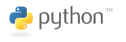

Introduction
Python is a dynamically interpreted programming language. Python can be used on multiple operating systems such as Windows, UNIX, and MAC, and can also be used on Java and .NET development platforms.

Features
1 Python is developed using the C language, but Python no longer has complex data types such as pointers found in C.
2 Python has strong object-oriented features and simplifies the implementation of object orientation. It eliminates object-oriented elements such as protected types, abstract classes, and interfaces.
3 Python code blocks use spaces or tabs for indentation to separate code.
4 Python has only 31 reserved words, and has no markers such as semicolons, begin, or end.
5 Python is a strongly typed language. After a variable is created, it corresponds to a data type. Different types of variables appearing in the same expression need type conversion.
Setting Up the Development Environment
1 You can download the installation package from www.python.org, then install it using configure, make, and make install.
2 You can also go to www.activestate.com to download the ActivePython component package. (ActivePython is a binary wrapper around the Python core and common modules; it is a Python development environment released by ActiveState. ActivePython makes Python installation easier and can be used on various operating systems. ActivePython includes some common Python extensions and a programming interface for the Windows environment.) For ActivePython, if you are a Windows user, just download the msi package and install it; if you are a Unix user, download the tar.gz package and extract it directly.
3 Python IDEs include PythonWin, Eclipse+PyDev plugin, Komodo, EditPlus.
Versions
Python 2 and Python 3 are the two main versions currently.
In the following two cases, it is recommended to use Python 2:
1 When you cannot fully control the environment where you are about to deploy;
2 When you need to use certain third-party packages or extensions;
Python 3 is the officially recommended version and is fully supported for the future. Currently, many feature improvements are only made in Python 3.
hello world
1 Create hello.py
2 Write the program:
if __name__ == \'__main__\':
print "hello word"
3 Run the program:
python ./hello.py
Comments
1 Whether it is a line comment or a block comment, use # plus a space to comment.
2 If you need to use Chinese comments in the code, you must add the following comment declaration at the very beginning of the Python file:
# -* - coding: UTF-8 -* -
3 The following comment is used to specify the interpreter.
#! /usr/bin/python
File Types
1 Python file types are divided into 3 types: source code, byte code, and optimized code. All of these can be run directly without compilation or linking.
2 Source code uses .py as the extension and is interpreted by Python;
3 After compilation, source files generate files with the .pyc extension, which are compiled byte files. These files cannot be modified with a text editor. .pyc files are platform-independent and can run on most operating systems. The following statement can be used to produce .pyc files:
import py_compile py_compile.compile(‘hello.py’)
4 Optimized source files use .pyo as the suffix, i.e., optimized code. They also cannot be directly modified with a text editor. The following command can be used to generate .pyo files:
python -O -m py_complie hello.py
Variables
1 Variables in Python do not need to be declared. The assignment operation of a variable is the process of declaring and defining the variable.
2 In Python, a new assignment creates a new variable. Even if the variable names are the same, the variable identifiers are different. The id() function can be used to obtain the variable identifier:
x = 1 print id(x) x = 2 print id(x)
3 If a variable has not been assigned, Python considers the variable nonexistent.
4 Variables defined outside functions can be called global variables. Global variables can be accessed by any function inside the file and by external files.
5 It is recommended to define global variables at the beginning of the file.
6 You can also put global variables in a dedicated file and then reference them via import:
The contents of gl.py are as follows:
_a = 1 _b = 2
Reference global variables in use_global.py:
import gl def fun(): print gl._a print gl._b fun()
Constants
Python does not provide a reserved word for defining constants. You can define a constant class yourself to implement the functionality of constants.
class _const:
class ConstError(TypeError): pass
def __setattr__(self,name,vlaue):
if self.__dict__.has_key(name):
raise self.ConstError, “Can’t rebind const(%s)”%name
self.__dict__[name]=value
import sys
sys.modules[__name__]=_const()
Data Types
1 Python's numeric types are divided into integer, long integer, floating-point, boolean, and complex types.
2 Python has no character type.
3 Python has no ordinary types internally; all types are objects.
4 If you need to view the type of a variable, you can use the type class, which can return the type of a variable or create a new type.
5 Python has 3 ways to represent string types: single quotes, double quotes, and triple quotes. Single quotes and double quotes work the same way. Python programmers prefer single quotes, while C/Java programmers are used to using double quotes for strings. Triple quotes can contain single quotes, double quotes, or newline characters.
Operators and Expressions
1 Python does not support increment and decrement operators. For example, i++/i- is wrong, but i+=1 is allowed.
2 In Python, 1/2 equals 0.5 before Python 2.5, and equals 0 after Python 2.5.
3 Not equal is != or <>
4 Equality is represented by ==
5 In logical expressions, and represents logical AND, or represents logical OR, and not represents logical NOT.
Control Statements
1 Conditional statement:
if (表达式) :
语句1
else :
语句2
2 Conditional statement:
if (表达式) : 语句1 elif (表达式) : 语句2 … elif (表达式) : 语句n else : 语句m
3 Conditional nesting:
if (表达式1) :
if (表达式2) :
语句1
elif (表达式3) :
语句2
…
else:
语句3
elif (表达式n) :
…
else :
…
4 Python itself does not have a switch statement.
5 Loop statement:
while(表达式) : … else : …
6 Loop statement:
for 变量 in 集合 : … else : …
7 Python does not support C-style loop statements like for(i=0;i<5;i++), but you can simulate it with range:
for x in range(0,5,2):
print x
Array-Related
1 Tuple: a built-in data structure in Python. A tuple is composed of different elements, and each element can store a different type of data, such as strings, numbers, or even elements. Tuples are write-protected, meaning that once a tuple is created, it cannot be modified. A tuple often represents a row of data, and the elements in the tuple represent different data items. A tuple can be regarded as an unmodifiable array. An example of creating a tuple is as follows:
tuple_name=(“apple”,”banana”,”grape”,”orange”)
2 List: A list is similar to a tuple and is also composed of a group of elements. Lists support add, delete, and find operations, and element values can be modified. Lists are arrays in the traditional sense. An example of creating a list is as follows:
list=[“apple”,”banana”,”grage”,”orange”]
You can use the append method to add an element at the end, and use remove to delete an element.
3 Dictionary: a collection composed of key-value pairs. Values in a dictionary are referenced by keys. Keys and values are separated by a colon, key-value pairs are separated by commas, and are enclosed in a pair of curly braces. An example of creation is as follows:
dict={“a”:”apple”, “b”:”banana”, “g”:”grage”, “o”:”orange”}
4 Sequence: a sequence is a collection with indexing and slicing capabilities. Tuples, lists, and strings all belong to sequences.
Function-Related
1 Python programs consist of packages, modules, and functions. A package is a collection composed of a series of modules. A module is a collection of functions and classes that handle a certain type of problem.
2 A package is a toolbox for completing specific tasks.
3 A package must contain an __init__.py file, which is used to identify the current folder as a package.
4 Python programs are composed of individual modules. A module organizes a group of related functions or code into one file; one file is a module. Modules consist of code, functions, and classes. Use the import statement to import a module.
5 The purpose of a package is to achieve program reuse.
6 A function is a piece of code that can be called multiple times. An example of function definition is as follows:
def arithmetic(x,y,operator):
result={
“+”:x+y,
“-“:x-y,
“*”:x*y,
“/”:x/y
}
7 The return value of a function can be controlled with return.
String-Related
1 Formatted output:
format=”%s%d” % (str1,num) print format
2 Use + to concatenate strings:
str1=”hello” str2=”world” result=str1+str2
3 String extraction can be done through indexing/slicing, or through the split function.
4 Extract a substring by slicing:
word=”world” print word[0:3]
5 Python uses == and != to compare strings. If the types of the two variables being compared are not the same, then the result is definitely not equal.
File Handling
1 Simple file handling:
context=”hello,world” f=file(“hello.txt”,’w’) f.write(context); f.close()
2 To read a file, you can use the readline() function, the readlines() function, and the read function.
3 To write to a file, you can use the write() and writelines() functions.
Objects and Classes
1 Python uses the class keyword to define a class, and the first character of the class name should be capitalized. When the type a programmer needs to create cannot be represented by a simple type, they need to define a class, and then use the defined class to create objects. Example of defining a class:
class Fruit:
def grow(self):
print “Fruit grow”
2 When an object is created, it contains three characteristics: the object's handle, attributes, and methods. The way to create an object:
fruit = Fruit() fruit.grow()
3 Python does not have protected type modifiers.
4 Class methods are also divided into public methods and private methods. Private functions cannot be called by functions outside the class, and private methods cannot be called by external classes or functions.
5 Python uses the function "staticmethod()" or the "@staticmethod" directive to convert ordinary functions into static methods. Static methods are equivalent to global functions.
6 Python's constructor is named __init__, and its destructor is named __del__.
7 How to use inheritance:
class Apple(Fruit): def …
Connecting to MySQL
1 Using the MySQLdb module to operate a MySQL database is very convenient. Example code is as follows:
import os, sys
import MySQLdb
try:
conn MySQLdb.connect(host=’localhost’,user=’root’,passwd=’’,db=’address’
except Exception,e:
print e
sys.exit()
cursor=conn.cursor()
sql=’insert into address(name, address) values(%s, %s)’
value=((“zhangsan”,”haidian”),(“lisi”,”haidian”))
try
cursor.executemany(sql,values)
except Exception, e:
print e
sql=”select * from address”
cursor.execute(sql)
data=cursor.fetchall()
if data
for x in data:
print x[0],x[1]
cursor.close()
conn.close()
For further study, see here:Python Tutorial。
Original source: http://roclinux.cn/?p=2338